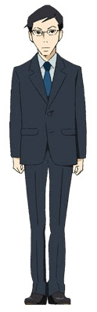
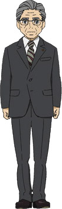
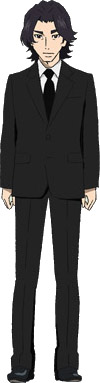

The household of a all-serious political family (except for Kuranosuke). Not much is known about the Koibuchi family since most of the story is spent with the Amamizukan residents. The residents are rarely home.
sadly, there is no good full image of the house.
Kuranosuke Koibuchi
Kuranosuke is the son of a rich political family. He uses the alias "Kurako" in front of the other Amars to hide his gender. He enjoys cross-dressing, to the chagrin of his family. Unlike the rest of his family, he does not find politics interesting at all and desires to get into fashion. He is constantly looking for the address of his mother, who gave birth to him after having an affair with his father, hoping to see at least once more the wardrobe she kept with so much passion.
After meeting Tsukimi and helping her rescue Clara (a jellyfish) from a pet store, he starts paying her visits, finding her more interesting than anything else in his life. Throughout his life he has always been popular with pretty girls and thus he almost cannot believe it when he starts realizing he may have feelings for Tsukimi.

Shū Koibuchi
Shu is the 30 year old personal assistant to his father Keiichiro Koibuchi, a famous politician and the half-brother of Kuranosuke. He has a phobia of women due to the fact that he had seen his father and Kuranosuke's mother, Lina, have an affair after a performance by Lina in her closet. He has a seemingly cold demeanor at first, but becomes somehow comical after he falls in love with Tsukimi because of his constant fantasies about her. Also, it can be seen that he is very kind and a pushover. He is a virgin as stated by Kuranosuke. He fell in love with Tsukimi's "after" (when she gets a makeover), but fails to recognize her after she has gone back to her "before" form.
Keiichiro Koibuchi
Keiichiro Koibuchi is a wealthy politician and the father of both Kuranosuke Koibuchi and Shū Koibuchi. His brother-in-law is Saburouta Negishi, the Prime Minister of Japan.


Yoshio Hanamori
Hanamori is the Koibuchi family's chauffeur and a childhood friend of Shu Koibuchi. He is a Mercedes-Benz enthusiast. Loves his car to the point it can be used as leverage against him. Hanamori can't draw anything but Mercedes-Benz well. He also likes gambling and flirting more than his duties to the Koibuchi family. There are literally no words to accurately describe him.